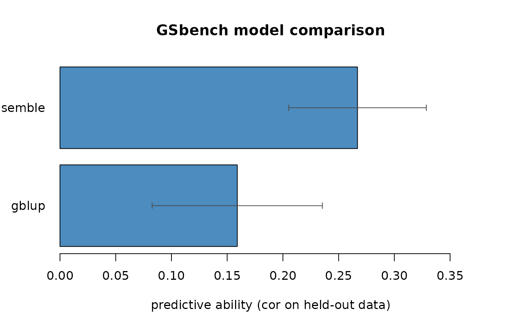

GSbench fits and compares genomic-selection models — GBLUP, ridge marker effects, and machine-learning methods — through one interface, using breeding-relevant cross-validation. This vignette walks through a full workflow.
A simulated dataset
For a reproducible example we simulate a population: 300 lines, 2000 SNPs, 50 QTL, narrow-sense heritability 0.5.
sim <- simulate_population(n = 300, m = 2000, n_qtl = 50, h2 = 0.5, seed = 1)
dim(sim$geno)
#> [1] 300 2000
sim$h2 # realised heritability
#> [1] 0.5Quality control
Filter low-call-rate, low-MAF and monomorphic markers, and impute the rest.
qc <- qc_markers(sim$geno, maf = 0.05, max_missing = 0.1)
qc$removed
#> call_rate maf monomorphic
#> 0 19 0
geno <- qc$genoGBLUP and the genomic relationship matrix
gblup() estimates variance components by REML. (Its
GEBVs match rrBLUP::mixed.solve to within 6e-5
— see the package tests.)
fit <- gblup(sim$pheno, geno)
fit
#> <gblup>
#> Vu = 50.27, Ve = 37.31, h2 = 0.574
#> 300 individuals; intercept = -0.4076; marker effects available
cor(fit$gebv, sim$bv) # accuracy against the true breeding values
#> [1] 0.6941135Because geno was supplied, the fit also carries ridge
marker effects, so it can predict new genotypes:
One interface for many models
gs_fit() exposes the same API for every model family.
Which are available depends on which optional packages you have
installed:
available_models()
#> [1] "gblup" "elastic_net" "random_forest" "xgboost"
#> [5] "ensemble"Cross-validation, done correctly
gs_cv() runs breeding-relevant cross-validation. Random
k-fold predicts untested lines (CV1); leave_group_out holds
out whole families or environments.
cv <- gs_cv(sim$pheno, geno, models = "gblup", k = 5, reps = 1, seed = 1)
cv
#> <gs_cv: kfold>
#> 5-fold x 1 rep(s)
#> model mean sd n_folds
#> gblup 0.159 0.076 5
#> (accuracy = predictive ability, cor(pred, observed) on held-out data)
# leave-one-family-out, with a toy family structure
fam <- rep(1:6, length.out = nrow(geno))
gs_cv(sim$pheno, geno, models = "gblup",
scheme = "leave_group_out", groups = fam)
#> <gs_cv: leave_group_out>
#> model mean sd n_folds
#> gblup 0.196 0.166 6
#> (accuracy = predictive ability, cor(pred, observed) on held-out data)A stacked ensemble
gs_ensemble() combines base models into a super-learner:
each model’s out-of-fold predictions are used to learn non-negative
weights (summing to one), and the final predictor is that weighted
blend.
ens <- gs_ensemble(sim$pheno, geno, base_models = "gblup", seed = 1)
ens$weights
#> gblup
#> 1With several base models installed, the weights show how much each contributes.
Benchmarking everything at once
gs_benchmark() runs every available model — including
the ensemble — under one cross-validation and reports predictive ability
so you can compare them fairly.
bench <- gs_benchmark(sim$pheno, geno, models = c("gblup", "ensemble"),
k = 5, seed = 1)
bench$accuracy
#> model mean sd n_folds
#> 1 ensemble 0.2669233 0.06176019 5
#> 2 gblup 0.1590768 0.07638873 5
plot(bench)
For an additive trait like this one, GBLUP and elastic net are typically strongest; tree methods trail; the ensemble lands near the top without you having to pick the winner in advance.